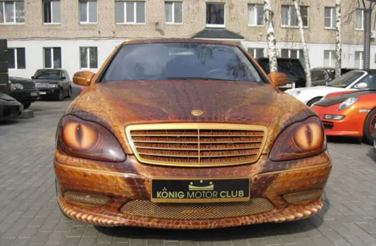

Il signor Fateh Frid di cui vedete un immagine qua sotto si occupa di creare veicoli che mettono paura a vederli

l'azienda del signor Frid è leader mondiale nella costruzione di auto per manifestazioni a tema
In particolare il signor frid costruisce alcune auto che sono definite paurose siccome hanno spesso la carrozzeria che assomiglia ad alcuni dei mostri più celebri
le auto del signor Frid sono spesso usate in film o maniestazioni a tema mostri o paura
un esempio può essere questa mercedes venduta dal signor Frid al famoso attore di hollywood Tom Cruise un anno fa

Molte personalità del mondo odierno possiedono una macchina del signor Frid in quanto questa rappresenta un simbolo di potere
essendo queste auto esclusive e spesso limitate
l'azienda del signor Frid si pccupa di personalizzare qualsiasi tipo di macchina passando da una comunissima toyota a le più esclusive Ferrari e Lamborghini
il signor frid punta nei prossimi anni ad espandere la sua azienda passando dalle auto anche alle moto.
Questo passaggio il signor Frid punta a completarlo entro il 2026